Crown of Shadows is a prototype RPG made in RPG Maker MV. The goal of this project was to
practice creating 2D environments
and levels while also trying to work on narrative writing.
This project is unfinished but still contains many explorable areas such
as the Village, Mountain Caves, Forest Trail,
as well many buildings which can be entered and explored.
One of my main interests in game design is level design so this project was an opportunity to practice
designing levels which allow the player to explore
while still guiding them towards an endpoint. I designed all
of the maps myself using RPG Maker's assets, which allowed me to create a variety of levels
of different sizes and
environments. The game also>contains a very bare narrative which I would have liked to explore more if I had the time,
as the player
interacts with NPCs, they can learn pieces of backstory about the characters.
Using the database system which RPG Maker MV provides, I created a multitude of enemies (Such as bats,
spiders, bandits, etc.) each with different amounts
of health and defense. I also created custom classes
(Cleric, Fighter, Bard, Barbarian) inspired by the classes from Dungeons and Dragons. These classes all
have
custom spells and actions which progessively unlock as the player levels up by gainging XP. Additionally, each of the
classes' stats progress differently.
For example, a barbarian will have a greater maximum health than a cleric.
It was important for me to have varied character progression to ensure that each of the
party
members are unique and interesting.
The Village
The Village is the main area of the game, containing multiple buildings which have explorable interiors
such as the Inn, Store
and various houses. The aim of the Village is to provide the player with a large, open
area to explore at their own pace. As the
player explores, they can speak to all of the NPCs and unlock quests from a
few of them. I designed the layout of the village to try and encourage
the player to see most of the area.
For example, the player starts the game in one of the houses in the top right corner of the map,
they are then encouraged to
follow the stone path which is designed to pass most of the buildddings.
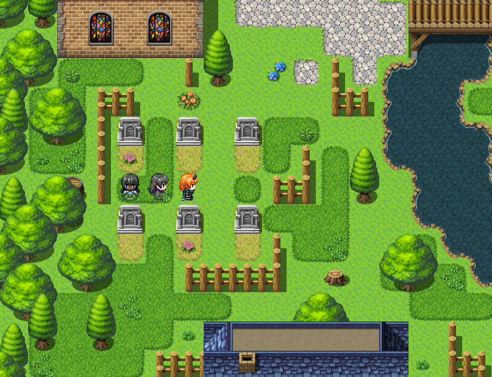
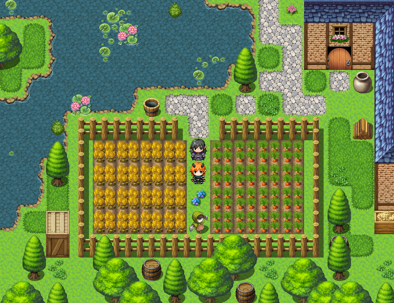
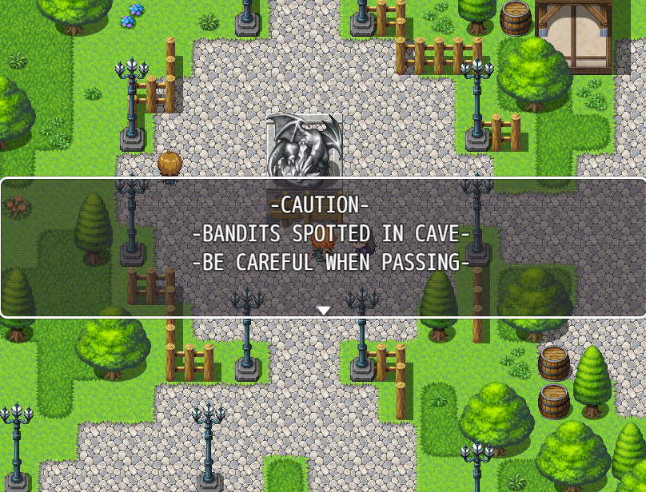
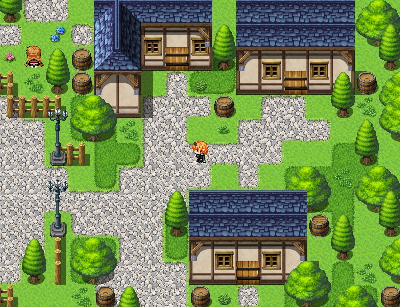
Forest Trail
The trail acts as a hub of access to other areas. This is the first location the player will enter upon
leaving the village and acts as a simple transition area to help pace the game. From here, the player can
access the caves and the village with additional paths which would have led to more areas if I had the time to
implement them. I intentionally made the trail free of enemies and NPCs to slow down the pace of the game
before it starts to pick back up when the player enters the next area.
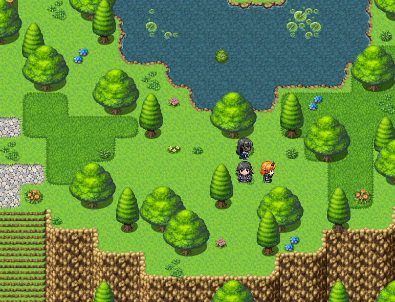
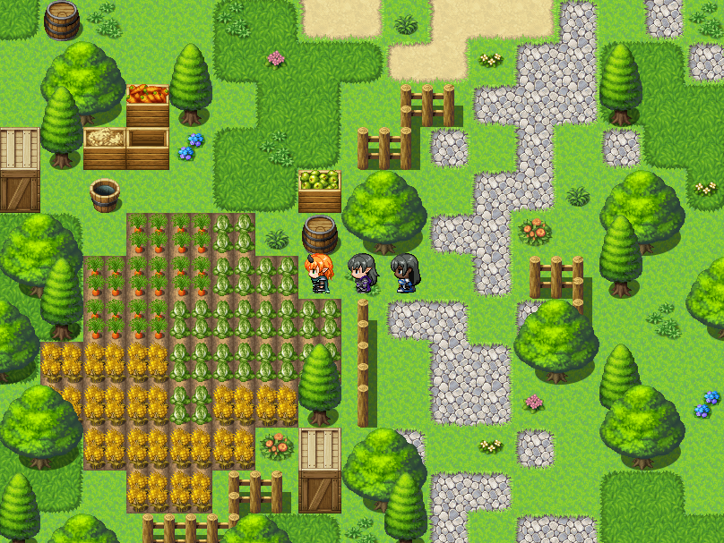
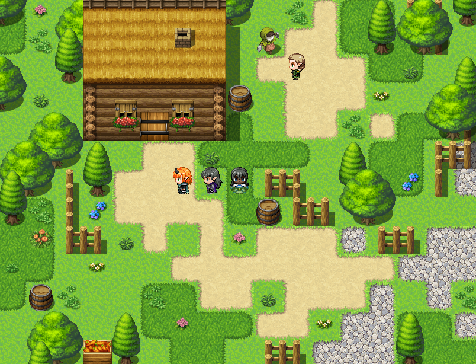
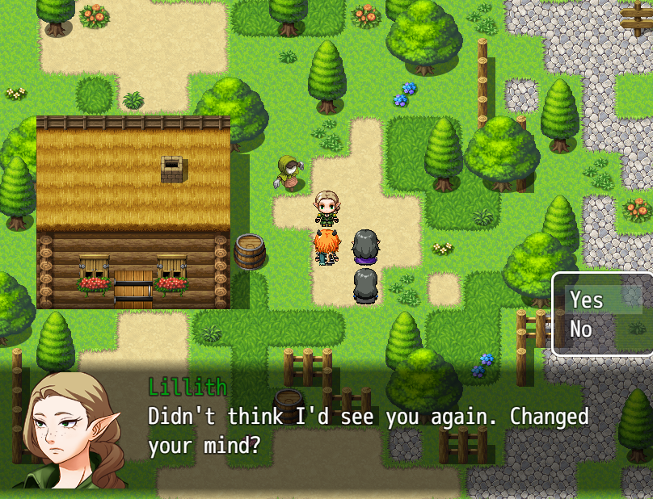
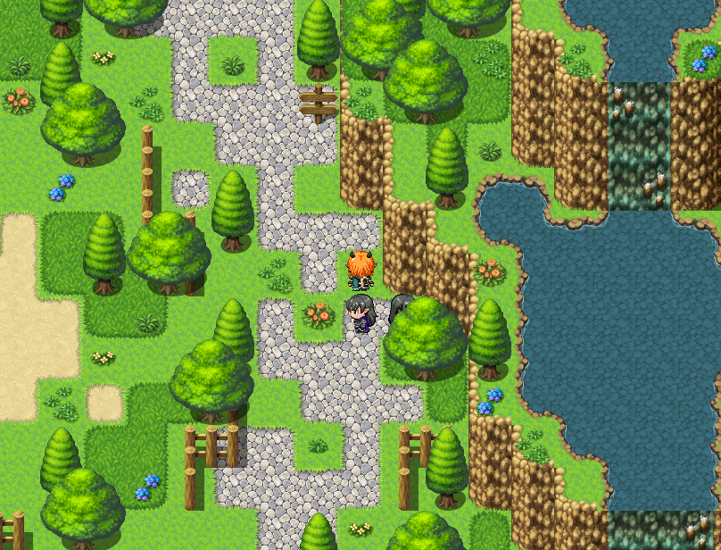
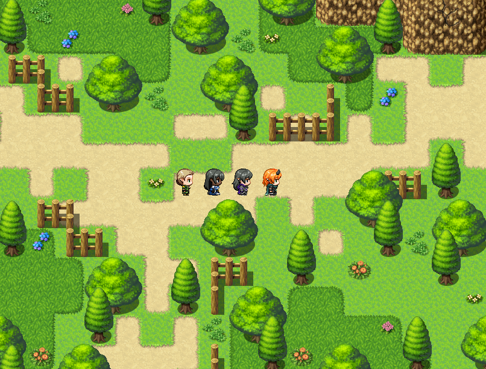
Mountain Caves
The Mountain Caves is the most combat-heavy area of the game. Upon entering, the player can explore a series of
caverns and tunnels while fighting enemies. The player will randomly encounter enemies as they explore which encourages
them to experience the battle mechanics that the RPG has to offer. This also allows them to level up the characters and
unlock new abilities before the boss battle at the end of the area. There are also chests and other items to find and loot
throughout the caves, this is to encourage exploration.
When the player reaches the end of the caves, they enter an area
filled with bandits and have to complete a boss fight. I made the boss to be more powerful than the other bandits to ensure
that it is challenging but stil possible. When the player defeats the boss, they have the option to recruit a new character
who had been captured by the bandits, which could lead into a side quest covering her capture.
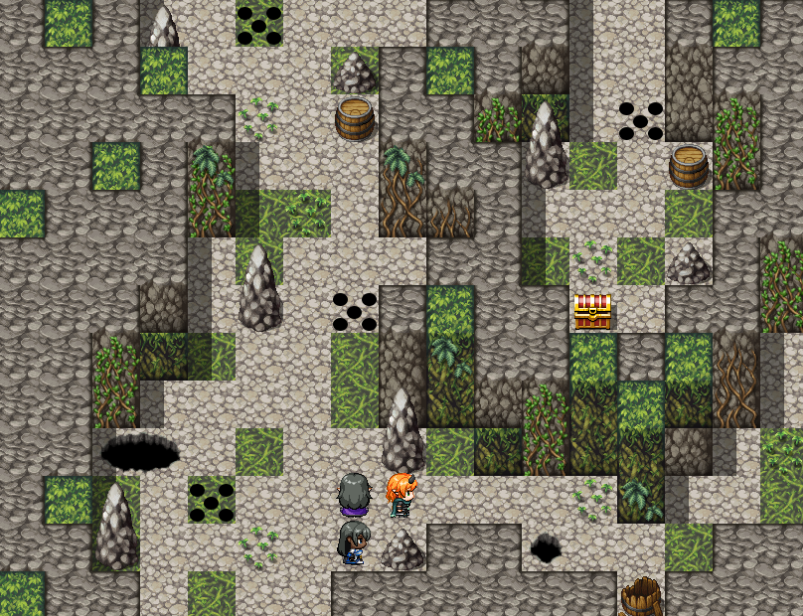
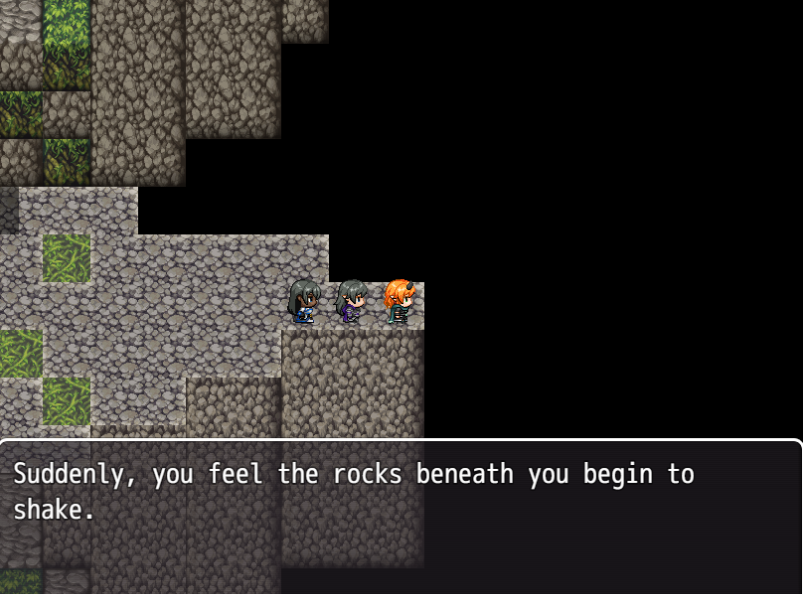
Interiors
Every building in the game can be entered and explored, including the many houses as well as the Inn, Church and Store.
I wanted each building to have a visually interesting interior while also adding more context and life to the game. For example,
the player can enter the shop and purchase helpful items such as healing potions which will aid them in battle. Addittionally,
the player can enter the church and make an offering to unlock damage buffs, or they can explore the basement to find and recruit
one of the potential party members.
I think that allowing the player to explore the buildings makes the game feel larger and more engagingm, which is crucial for the
user experience. Furthermore, rewarding this exploration with items, buffs and new quests helps to make the player feel like exploring
is worth their time and is not pointless.
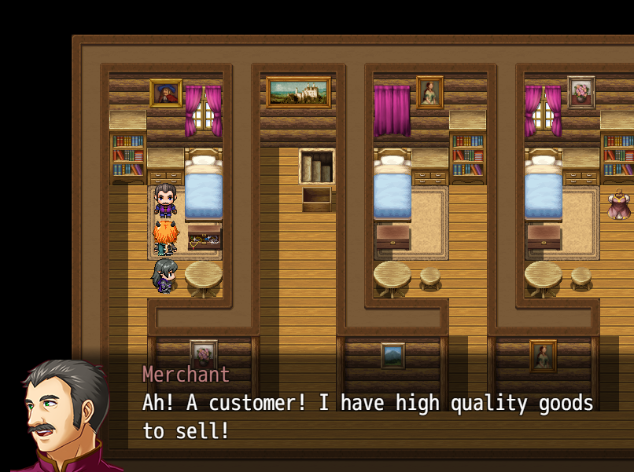
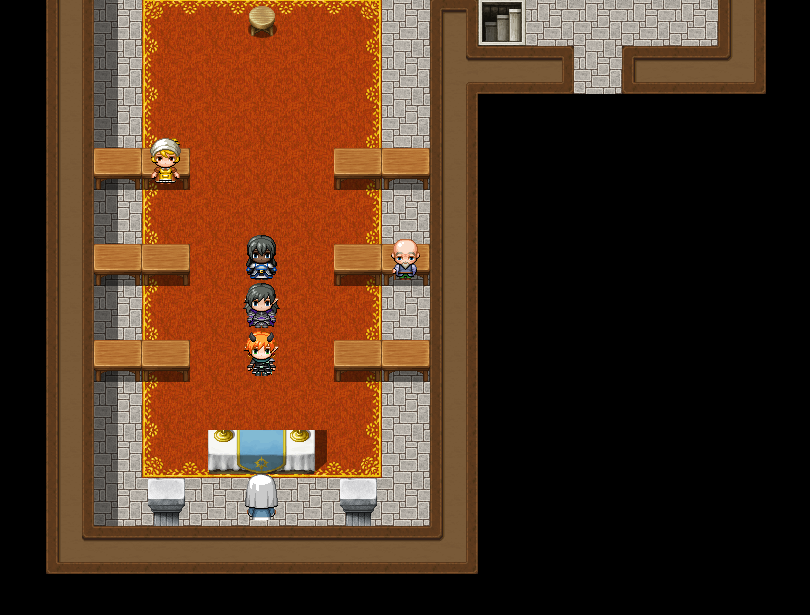
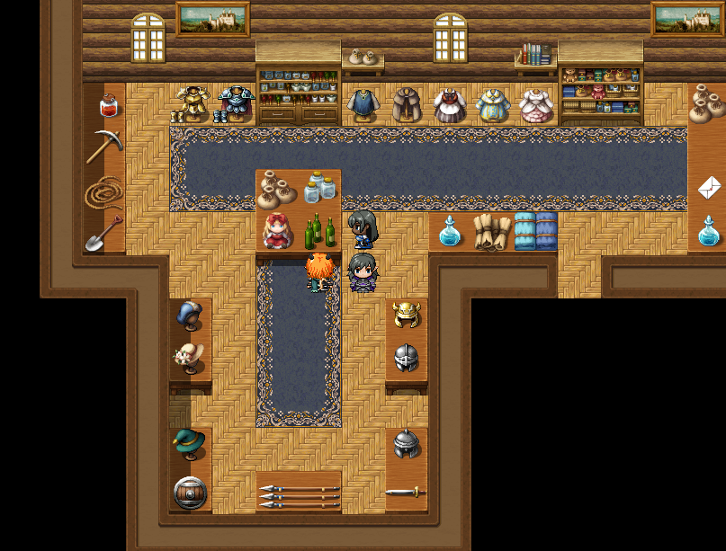
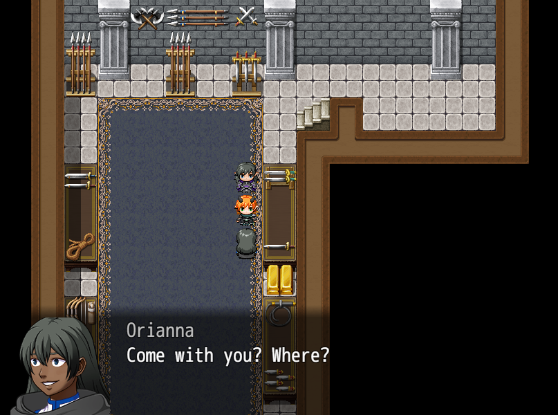
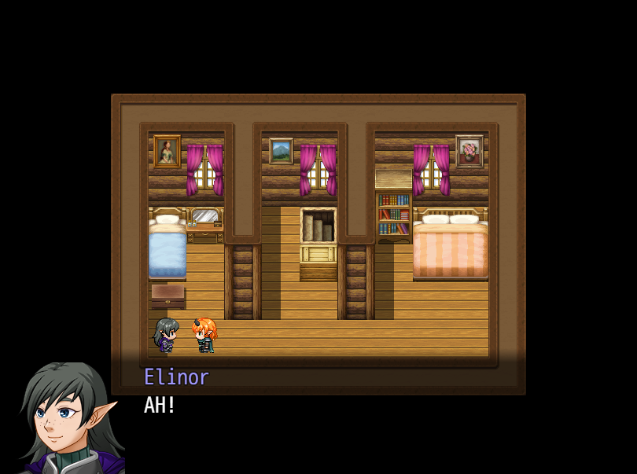
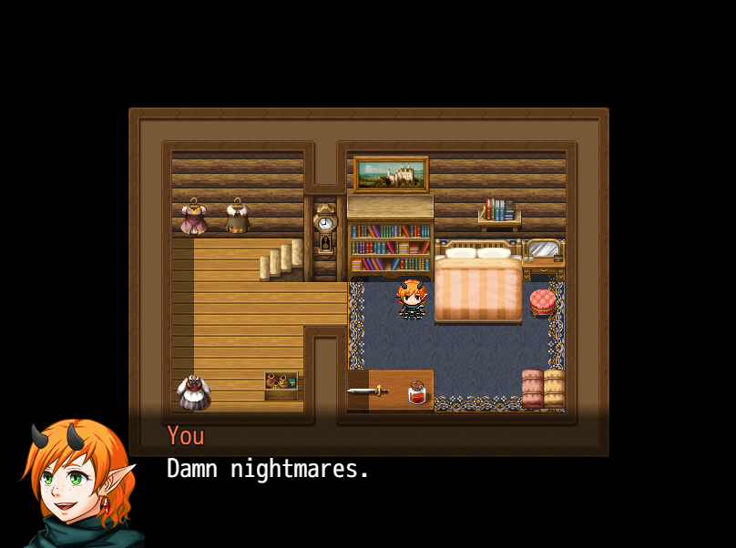